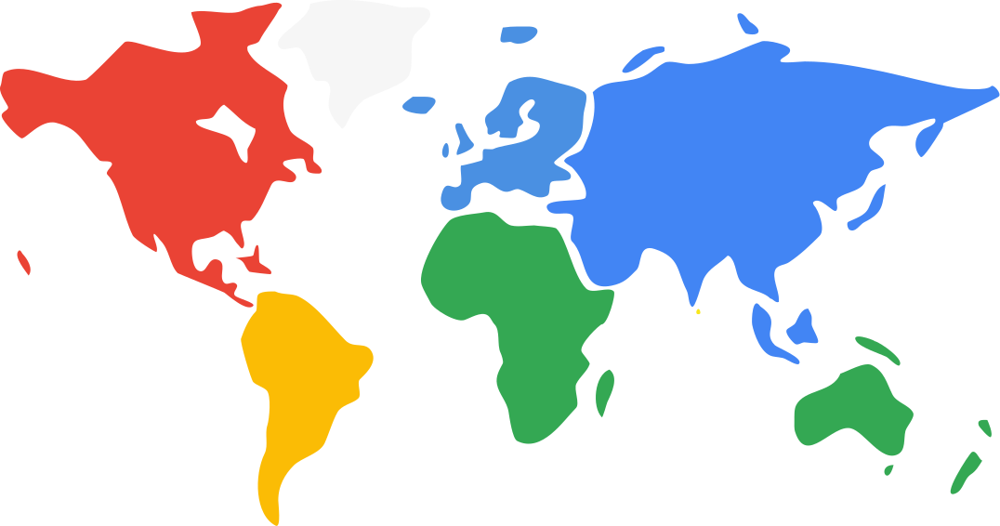
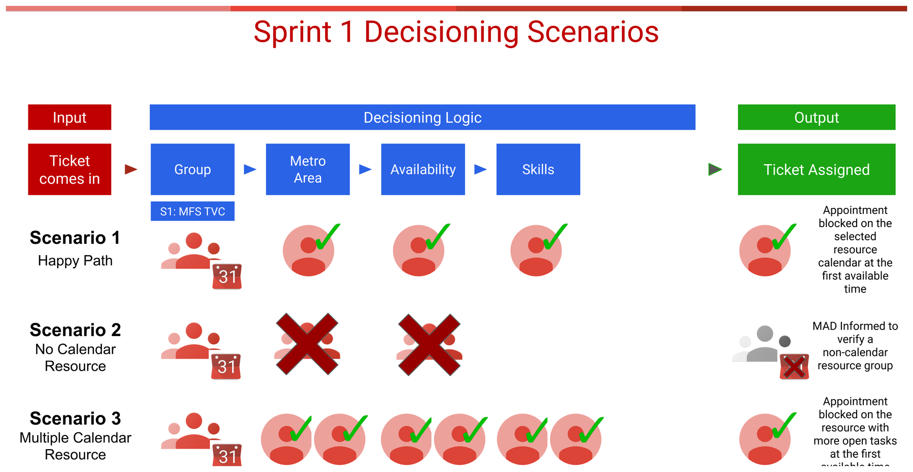
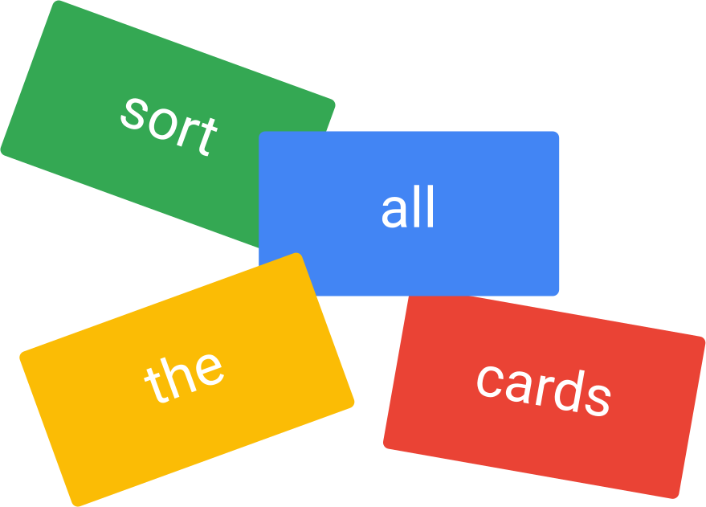
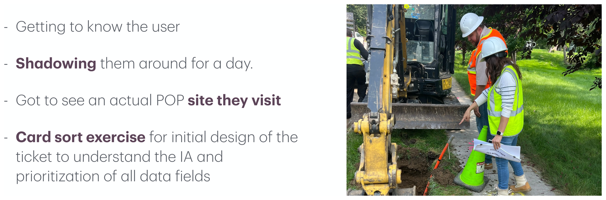
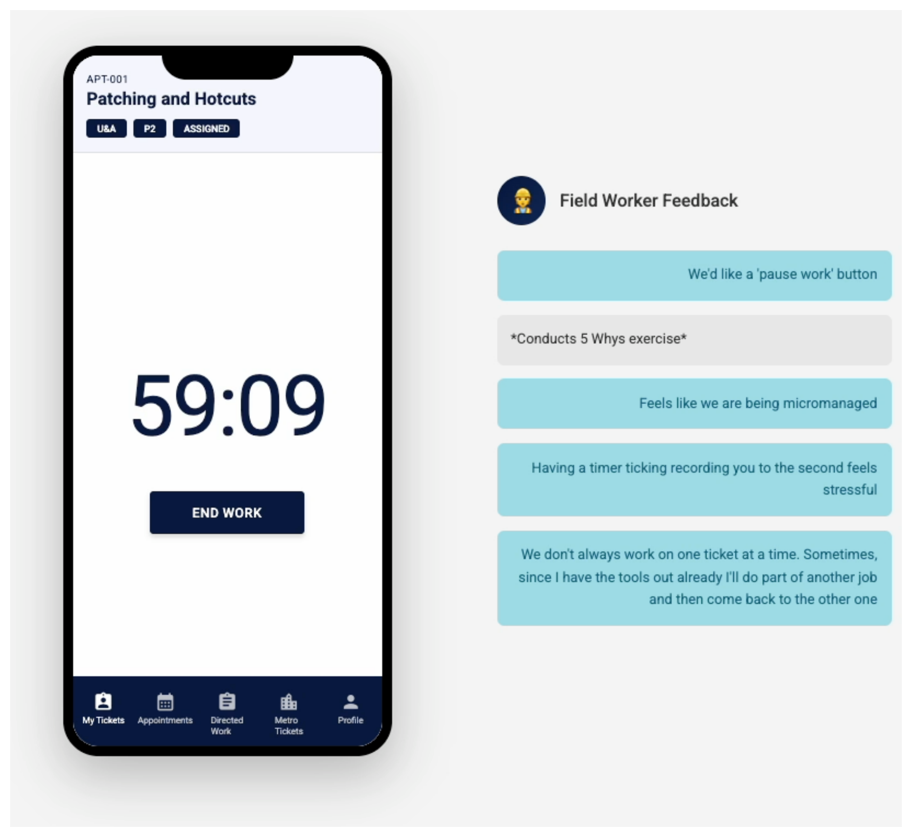
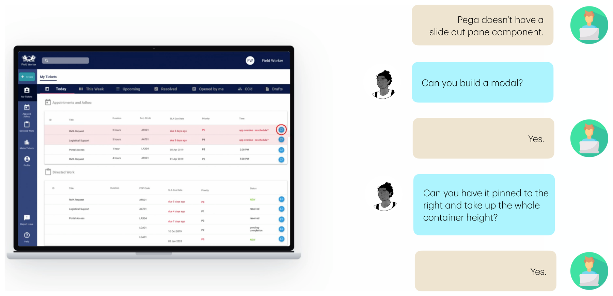

Case Study · Enterprise
Automating field dispatch at scale
A regional-management platform and field-worker mobile app that made automation possible across 10 workstreams, 4 timezones, and 3 user groups — a 30% productivity gain.
Overview
A dispatch console that routes field work across global metros — paired with the mobile app field workers carry on site. I owned the design end to end, from the underlying workflow logic to the final UI.
Impact
What it moved
The work also informed the product roadmap and contributed to a client contract renewal.
The Brief
“How might we automate the assignment of field workers to tickets — at scale, across regions, in real time?”
Three user groups, one workflow: field workers on site, regional owners managing metros, and dispatch agents routing work remotely across timezones.

You can't automate a workflow you haven't defined. Before any UI, I mapped the decisioning logic — how a ticket gets grouped, matched to a metro, checked for availability and skills, and assigned — and pressure-tested it against the messy real-world scenarios (no calendar resource, multiple resources, overtime).


This artifact aligned engineering, PM, and the client on a single source of truth — and surfaced the open questions early, before they became rework.
I shadowed a field worker for a day and visited a live POP site. The context changed the product: limited WiFi, on ladders, laptop left in the truck. So I pushed back on the desktop-first default and argued for a mobile-first field app.

I also ran feedback rounds without their managers present. Power dynamics skew honesty — the boss in the room changes the answer. The regional owners were the paying stakeholder, but not the only user who mattered.
The first app tracked travel and work with live timers. Early testing flagged a real risk: the ticking timer felt like surveillance.

I reframed the design around autonomy — a pause control, looser tracking, and a phased automation model (rule-based first, then data-informed) that kept a human in the loop. The shift showed up in how people talked about it.
“Instead of being watched, I feel like I get to help make it better.” — Field worker, usability testing
Dispatch agents work remotely — a different timezone from the job, and they must action a ticket in under six minutes. From a heuristic evaluation with 10 agents across Manila, Frankfurt, and London, one pattern dominated: the work log they relied on was buried three clicks deep, at the bottom of a long scroll.
I designed a slide-out work log pinned to the right at full height. The underlying platform had no slide-out pane component, so I partnered with engineering to build a custom one.

Result: three clicks to one, no more scrolling, ticket-assignment time down 30%, and a +2.5-point satisfaction lift for dispatch agents.